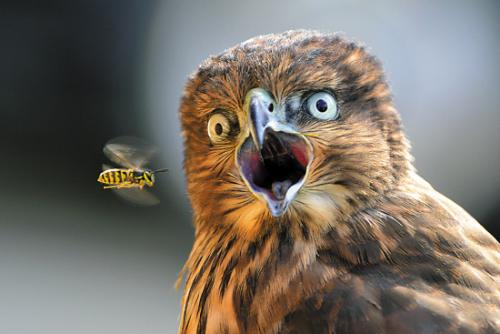
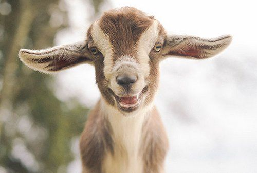

猫头鹰(Strigiformes)

鸮、枭、猫头鹰，是鸮形目（学名：Strigiformes）的鸟类。鸮形目是鸟纲中的目。眼睛大、嘴短而粗壮前端成钩状。相对于头部硕大的双目均向前是本目鸟类共有且区别于其他鸟类的特征，头部正面的羽毛排列成面盘，部分种类具有耳状羽毛。鸮形目在除南极洲以外所有的大洲都有分布，其中大部分物种为夜行性肉食性猛禽。猫头鹰在西方的爱琴海和基督教文化中是“幸运、智慧”的象征，而在中国文化中却有“厄运、恐怖”的意义，这与蝙蝠在中西文化中的定位正好相反。
草原狒狒(Papio cynocephalus)

草原狒狒（学名：Papio cynocephalus），又名黄狒狒，是一种栖息于旧世界的猿猴，其种名“cynocephalus”原意为“狗头”，源自于它们类似于犬科的口鼻部及头部。草原狒狒具有瘦长的身体及长四肢，毛呈黄褐色（但是因区域不同而有所差异），外表类似于豚尾狒狒，但具有较小的体型及较短的口鼻部。草原狒狒的面部无毛，呈黑色，两侧具有白色的鬓毛。
北极熊(Ursus maritimus)

北极熊（学名：Ursus maritimus，意即“海熊”）又称白熊或冰熊，是位于北极地区的一种大型肉食性哺乳动物，北极熊是现存体型最大的熊，也是现存陆地上最大的食肉动物，约在四十万年前（也有不同的学者认为是十五、二十、六十甚至上百万年前）由古代棕熊演化而来。
绵羊(Ovis aries)

绵羊（学名：Ovis aries）亦称为家羊或白羊，属哺乳纲偶蹄目牛科羊亚科，是一种四足反刍哺乳动物，也是世界上数量最多的羊种，共计超过十亿。大部分人类居住的地方都进行过牧羊，这也是许多文明的基本要素。现在为澳洲、新西兰、南美洲中部及南部，以及不列颠群岛的重要产业之一。
海龟(Sea Turtle)
海龟是海洋龟类的总称，所有龟鳖目动物中唯一生活在海洋的物种，分布范围十分广泛，分布于除北冰洋外的全球海域中。背上有壳，其花纹较一般陆龟或河龟复杂，壳的外型是扁平流线形，它的脚为船桨状。